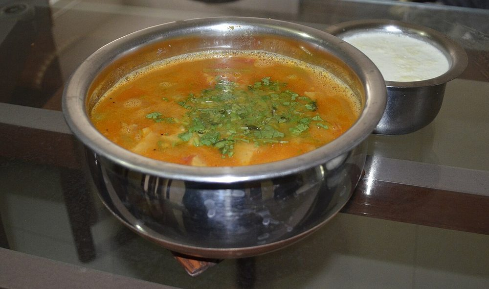

Contains: milk, gluten, peanuts, mustard
Ingredients
Quantities for 4.
- 150g Toor Dal
- 150g Atta
- 2 tbsp Besanfor the dhokli dough
- 1/2 tsp Ajwain
- 1 tsp in total Turmeric
- 1.5 tsp in total Chilli Powder
- 3 tbsp Neutral Oil
- 2.5 tbsp, grated Jaggery
- 2 tbsp thick pulp Tamarind
- 3 tbsp, raw Peanut
- 3 tbsp Ghee
- 1 tsp Mustard Seeds
- 1 tsp Cumin Seeds
- 2cm piece Cinnamonoptional
- 3 Clovesoptional
- 2, broken Dried Red Chilli
- 12 Curry Leaves
- 1/4 tsp Asafoetida
- 1 tsp, crushed Ginger
- 2, slit Green Chilli
- 1.4 litres in total Water
- 4 tbsp, chopped Coriander Leavesoptional
- to taste Salt
Cookware
stovetop, pressure cooker
Checked against the ingredient list for ten allergens: milk, egg, fish, crustaceans, tree nuts, peanuts, sesame, mustard, soy and gluten. Brands vary, so read the label on anything new to you.
Before you start
- Soak the toor dal 30 minutes and the peanuts along with it.
- Make the dhokli dough first and let it rest 20 minutes while the dal cooks; rested dough rolls thin without springing back.
- Keep 300ml of hot water aside. The dhokli drink a startling amount of liquid as they cook and again as they sit.
Method
- Pressure cook the drained dal with the peanuts, 1/2 tsp turmeric and 800ml water for 4 whistles, then let the pressure drop naturally.
- Meanwhile knead the atta, besan, ajwain, remaining turmeric, 1/2 tsp chilli powder, salt and 2 tbsp oil with about 70ml water into a stiff dough. Cover and rest 20 minutes.Stiffer than roti dough. Soft dhokli disintegrate in the dal.
- Whisk the cooked dal smooth, add the remaining water, tamarind, jaggery, ginger, green chilli, remaining chilli powder and salt, and bring to a simmer.
- Roll the dough very thin, 2mm, and cut into 4cm diamonds.Thin is the whole point. Thick dhokli stay doughy in the middle.
- Bring the dal to a rolling boil and drop the diamonds in a few at a time, stirring gently between additions.Add them one by one and keep the dal moving or they weld into a clump.
- Simmer uncovered 15 minutes, stirring occasionally, until the dhokli are cooked through and the dal has thickened around them.
- Heat the ghee, pop the mustard and cumin seeds with the cinnamon, cloves and dried chilli.
- Add the curry leaves and asafoetida, then pour the tempering over the pot.
- Simmer 3 minutes more, thinning with hot water to a thick soup.
- Scatter the coriander over and serve in bowls with a spoon of ghee and raw chopped onion on the side.
Storage
Best eaten immediately. It keeps 2 days refrigerated but thickens to a paste; reheat with a lot of hot water and expect the dhokli to be softer the next day.
Nutrition Medium estimate
Medium protein: 18 g a serving, 12% of the calories
| Per serving467 g | Per 100 g | |
|---|---|---|
| Calories | 593 kcal | 127 kcal |
| Protein | 17.5 g | 4 g |
| Carbohydrate | 74.7 g | 16 g |
| of which sugars | 14.4 g | 3 g |
| Fibre | 14.0 g | 3 g |
| Fat | 27.9 g | 6 g |
| of which saturated | 8.1 g | 2 g |
| of which unsaturated | 18.1 g | 4 g |
Ingredients given to taste count as zero, so the real figures run a little higher. Nearest database match used for asafoetida, curry leaves, jaggery. Estimated from raw ingredients using USDA FoodData Central.
More like this: Vegetarian Indian recipes · No onion no garlic recipes · Gujarati recipes
Times, yields, allergens and nutrition are guidance. Use your own judgement on doneness and on storing. More in About.